鏡を見るたびに気になる、ほうれい線、フェイスラインのたるみ、二重顎──化粧品では絶対にごまかせない悩み。
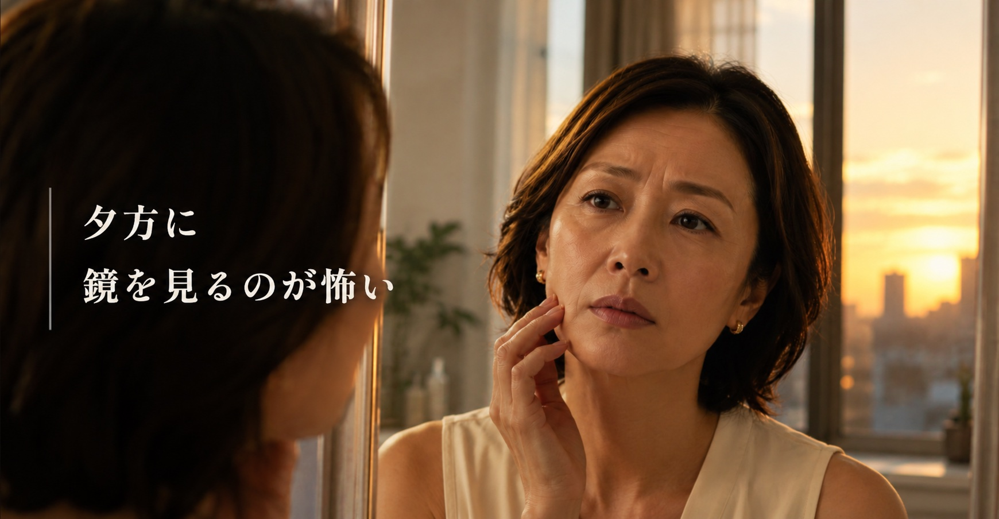
特に夕方──
朝より5歳老けて見える。
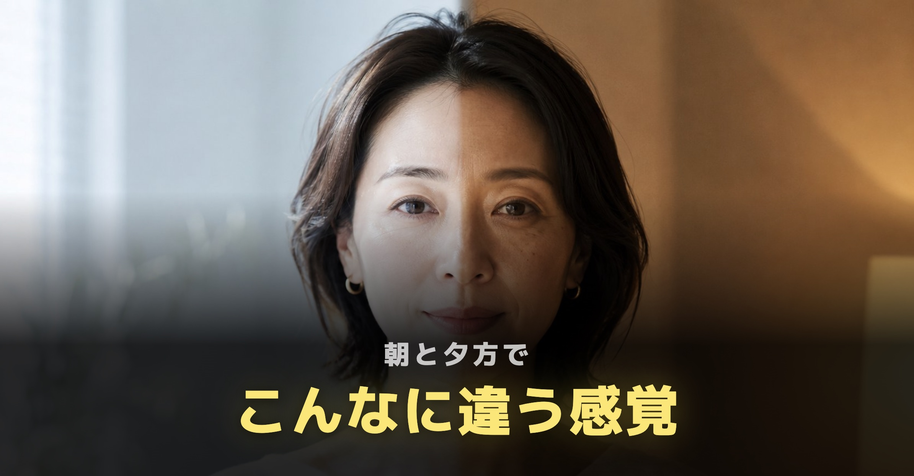
高いデパコス美容液を重ね塗りしても、翌朝にはどこか乾いている。
20代の頃のような「内側から押し返すハリ」がどこにもない。
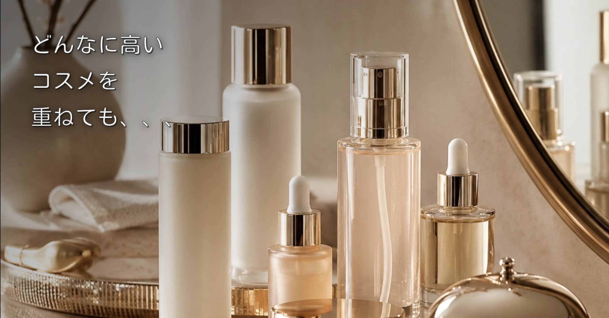
ファンデの厚塗りが増えた。
「塗るだけのケアじゃ、
このたるみは止められない」
「塗るだけ」では届かなかった
本当の理由
思い切って美容サロンに通い始めた。
施術直後のフェイスラインの引き締まり、顎下がシュッと上がる感覚──
「プロの機器って、ここまで違うのか」
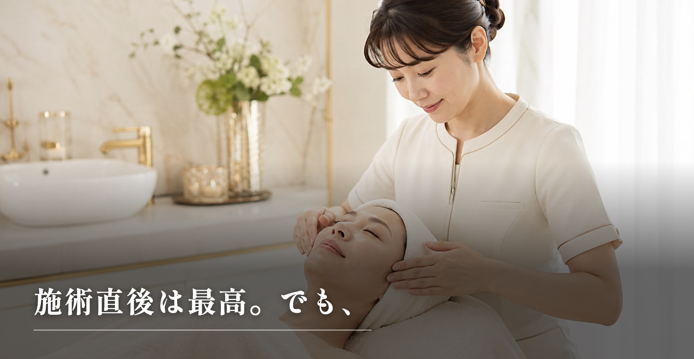
けれど、続けるうちにある現実に気づく。
1回1〜2万円。
年間約40万円。
忙しくて予約が取れない。
2週間も経てば、元通り。
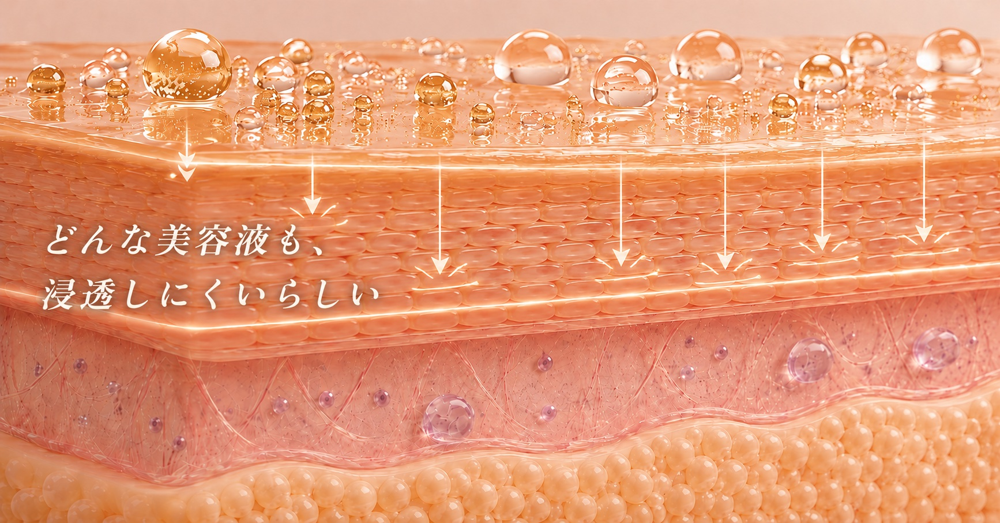
肌の「バリア機能」が美容成分の浸透を妨げています。どんなに高価な美容液でも、バリアに阻まれれば本来の力を発揮できません。
さらにフェイスラインのたるみや二重顎は、肌表面のケアだけでは届かない"深部"の問題。今、美容クリニックでも注目されているのが「熱」によるアプローチ。
※角質層まで
だからサロンの機器が必要だった。
でも──
「通い続けないと維持できない」
「時間もお金も、もう限界」
サロンの"あの感動"を
自宅の8分間で
サロンと同等の技術を、
自宅で毎日使えるとしたら？
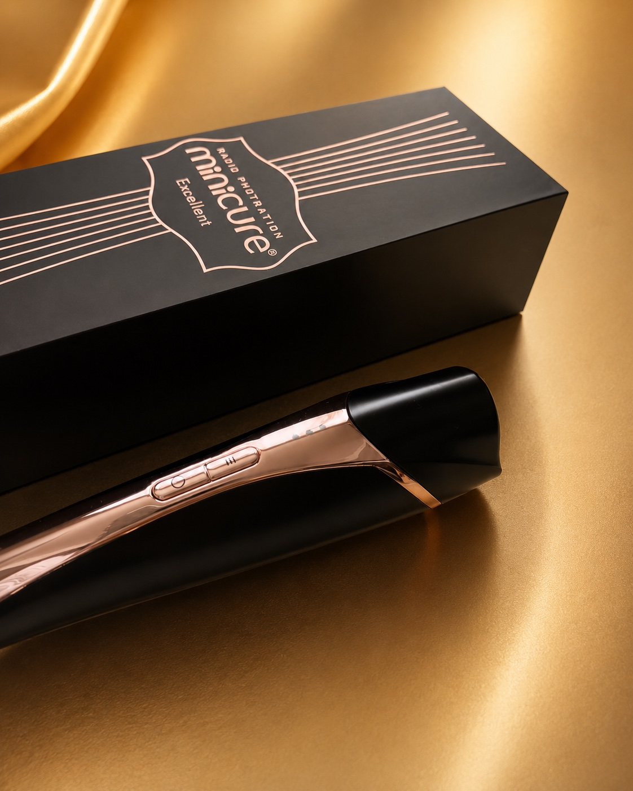
業務用機器メーカーが本気で開発した美顔器
「ミニキュアエクセレント」
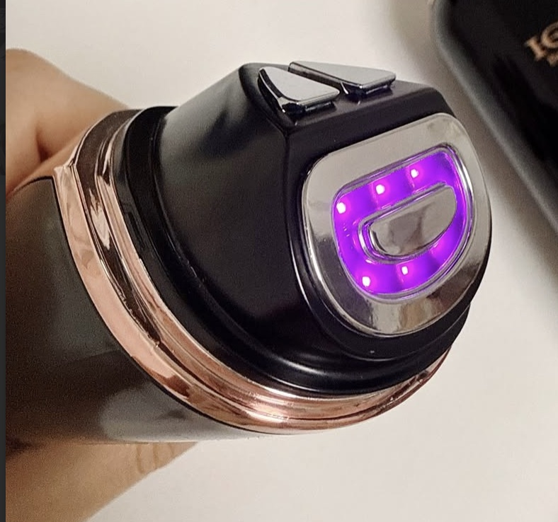
サロンで使われる2大技術を搭載。
イオン導入の約7倍の浸透力で
ヒト幹細胞美容液を角質層まで届ける
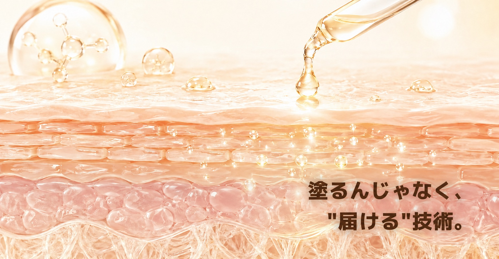
フェイスラインを内側から引き締める。
美容クリニックでも注目される
"熱による引き締めケア"を、自宅で。

美容液の力を最大限に引き出す
週2回。たった8分。
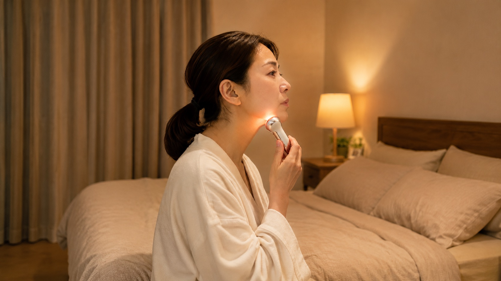
フェイスラインと顎下に当てるだけ。
予約不要、移動時間ゼロ。
なぜこの美容液じゃないとダメなのか
ミニキュアエクセレントのEPが美容成分の通り道をつくっても、届ける美容液の中身が伴わなければ意味がない。
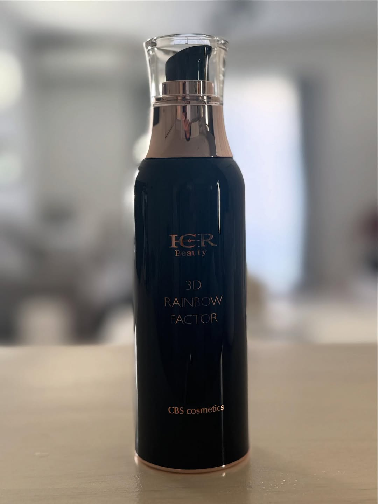
「塗る」だけの美容液とは、
届く場所が違う。
この美容液は、EPの浸透力を前提に設計された専用美容液。普通の美容液では届かない角質層まで届けるために、成分をリポソーム化（カプセル化）している。
※角質層まで
ハリ・ツヤのある肌へ導く。
※角質層まで
肌を整えるサポートに。
低濃度でもしっかり届く。
※角質層まで
先進の整肌成分を角質層まで届ける。
※年齢に応じたお手入れのこと
肌のコンディションを整え、うるおいのある肌環境へ導く。
2回目以降もこの美容液が届く定期コース。
美顔器は一度手に入れたら一生モノ。消耗するのは美容液だけだから、美容液のお金だけで"サロン級のケア"がずっと続く。
サロン通いと、どれほど違う？
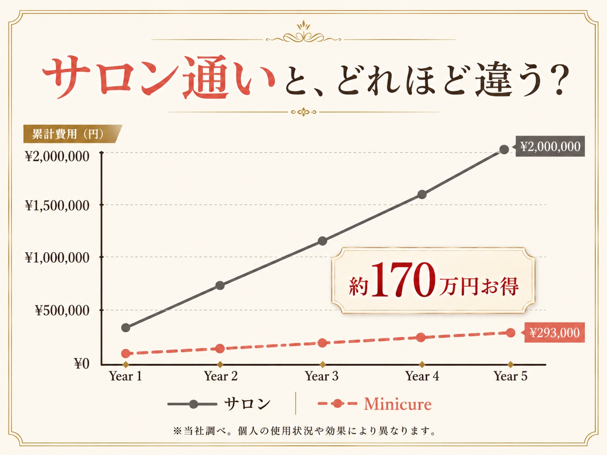
サロンたった1回分の投資で、
プロ級の美顔器がずっと自分のものに。
「フェイスライン変わった？」
と聞かれるようになった
使い始めて1ヶ月──
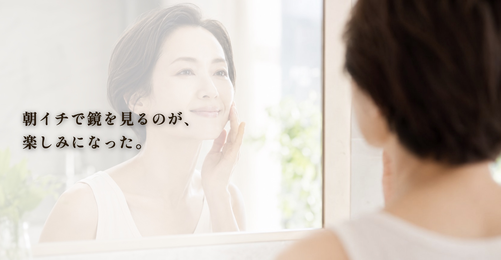
あれほど憂鬱だった夕方の鏡が、楽しみに変わった。
顎下のラインがシュッと引き締まった。
横顔に自信が持てるようになった。
友人から「フェイスライン、めちゃ変わってない？」と聞かれた。
3ヶ月後──サロン通いを完全に卒業。
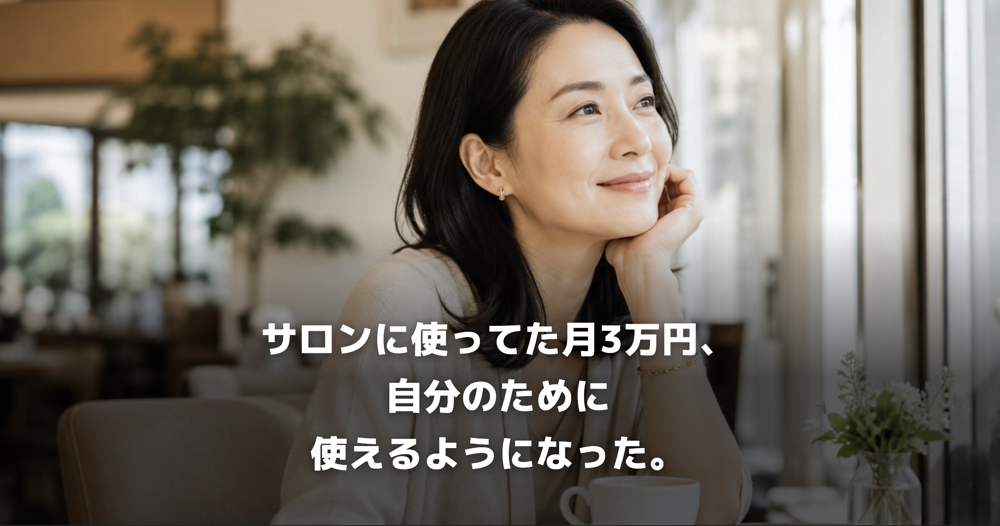
浮いた月3万円で、前から欲しかった服を買った。
往復の移動時間は、自分の趣味に使えるようになった。
「自分でプロ級の肌管理ができる」
その自信が、表情まで変えてくれた。
愛用者の声
使い始めて2週間で「顎下がすっきりした？」と実感。毎晩のご褒美タイムです。

サロンに月3万円使っていた私がこれ1台で卒業。フェイスラインの引き締まりが朝まで続きます。
横顔のラインが変わって、写真を撮られるのが怖くなくなりました。
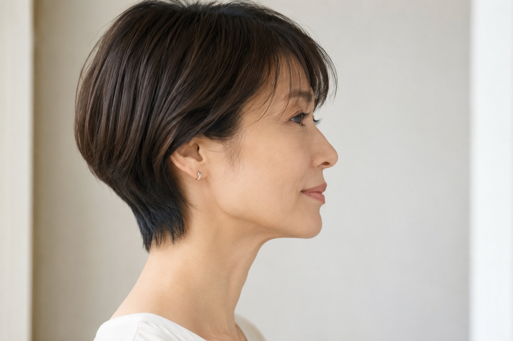
※個人の感想です。効果には個人差があります。
使い方は、たった3ステップ
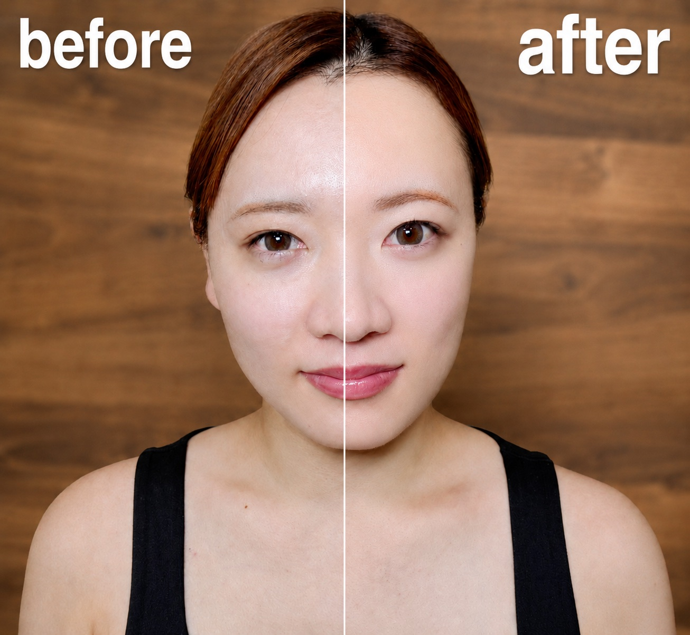
選ばれる理由
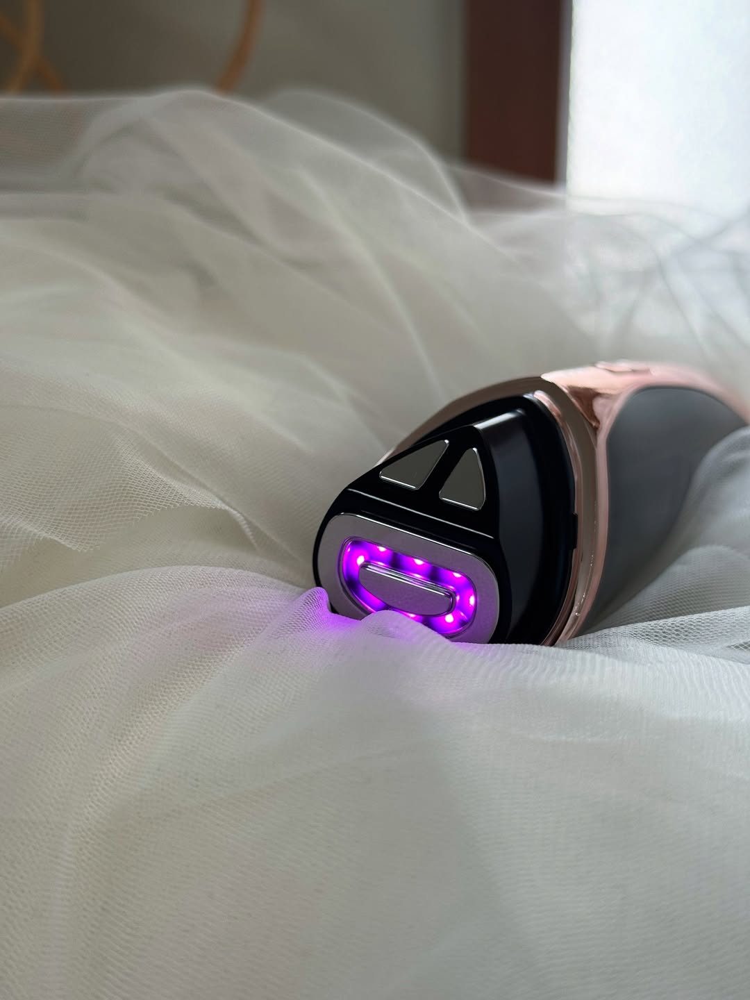
| 搭載技術 | EP・RF・LED |
|---|---|
| 浸透力 | イオン導入の約7倍 ※ |
| 加温 | 38.5℃（深部加温） |
| ケア時間 | 約8分（オートOFF） |
| 使用頻度 | 週2回 |
| 美容液 | ヒト幹細胞培養液等配合 |
| 保証 | メーカー1年保証 |
※角質層まで
専門スタッフが使い方・肌相談に対応。敏感肌も安心の3段階レベル調整付き。プライバシー配慮の梱包でお届け。
── 追伸
「もっと早く出会いたかった」──
愛用者から最も多い言葉です。
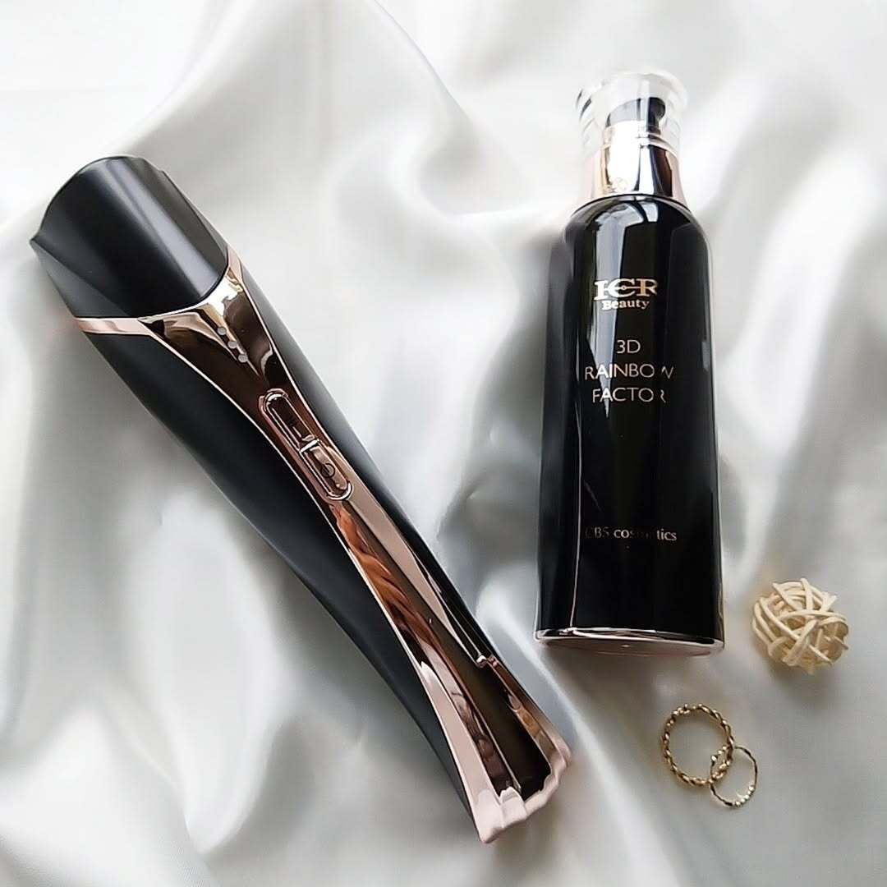
始めるなら、今日の肌がいちばん若い今。
週2回・8分の新習慣を始めるだけ。
時を止める体験を、あなたに。